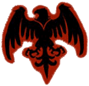

Visit our Website!
www.sandcastle.co.nf
-->Links to the Steam Workshop site of Horde Sandcastle
-->Features general infos, FAQ, Hall of fame and Media gallery (soon)
You will lose most buffs when you respawn. Some exceptions are the 400 HP upgrade, the +3 HP regeneration and the two lower armor types.